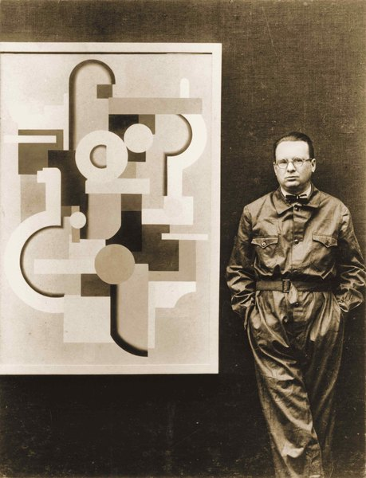

CRVI000217Yayoi Kusama - Infinity Mirror Room — Phalli's Field (or Floor Show)
Kusama standing in the work · via David Zwirner · 1965
Kusama standing in the work · via David Zwirner · 1965

CRVI001800Yves Klein - Blue sponge sculpture

CRVI001952Unidentified - Yayoi Kusama before an Infinity Net

CRVI002136Hannah Wilke - Art for Life's Sake

CRVI002243unattributed - Johannes Itten in his Mazdaznan robe

CRVI002254unattributed - Claes Oldenburg in The Store
1961
1961

CRVI003209Philippe Starck - Untitled

CRVI003229Vera Molnár - Untitled
1961
1961

CRVI003231Willi Baumeister - Untitled